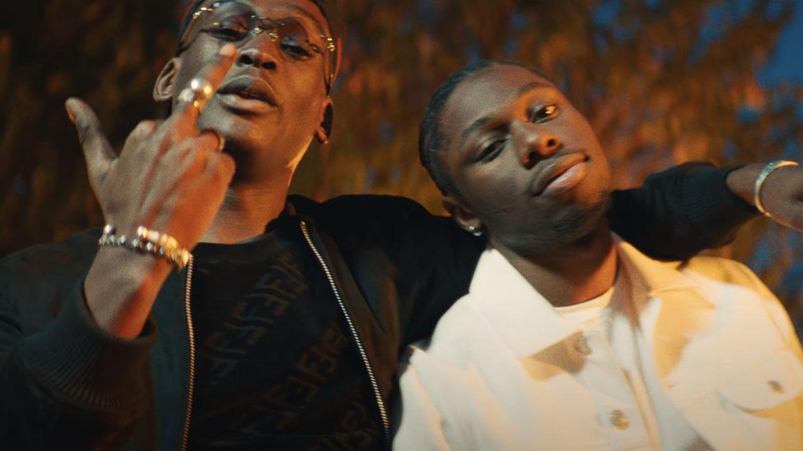
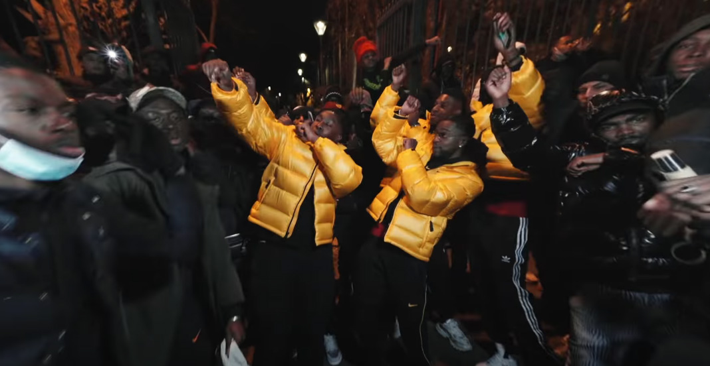
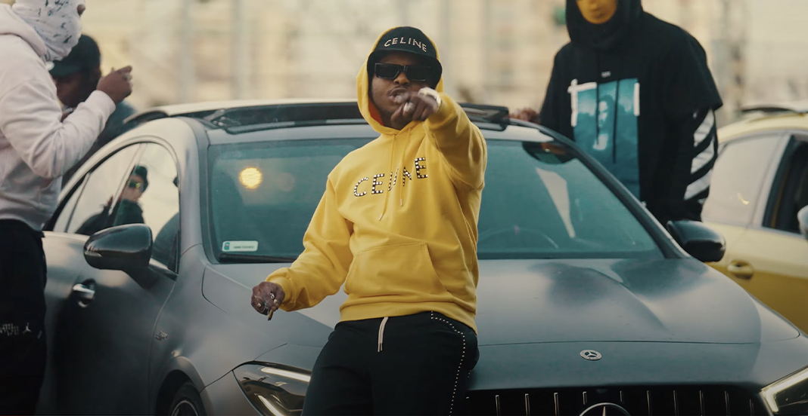

Now Playing
more_horiz

Quand j'y repense
Mig feat Tiakola

Full Black
Guy2bezbar

Eyes_contact
Gambino_La_MG feat Franglish

La Callé part.2 (Remontada)
Guy2bezbar

Mozart Capitaine Jackson
LETO
0:00
0:00
play_arrow
pause
skip_next
queue_music